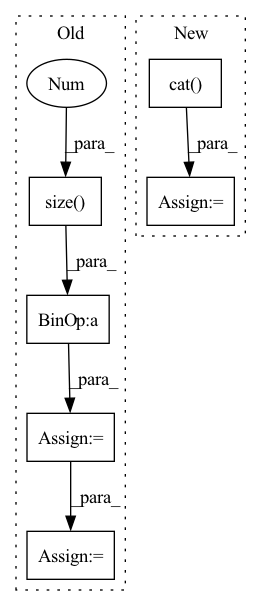

Pattern ID :1278
Before Change
// --------------------------------------------------------------------------
def forward(self, input, hx=None):
output_size = (
int((input.size(-1 ) - self.kernel_size + 2 * self.padding_ih) / self.stride) + 1
)
// Handle the case of no hidden state provided
if hx is None:
hx = torch.zeros(input.size(0), self.h_channels, output_size, device=input.device)
// Run the optimized convgru-cell
return _opt_convgrucell_1d(
input,After Change
if h_prev is None:
h_prev = self.init_hidden(input)
print(f"input: {input.shape} prev: {h_prev.shape}")
combined = torch.cat( (input, h_prev), dim=1) // concatenate along channel axis
combined_conv = F.sigmoid(self.conv_zr(combined))
In pattern: SUPERPATTERN
Frequency: 3
Non-data size: 6
Instances Fragment ID: 4484164
Project Name: openclimatefix/skillful_nowcasting
Commit Name: 02c5ceadd01484d6ac8bce848ff76446fe7a6917
Time: 2021-10-18
Author: jacob@bieker.tech
File Name: nowcasting_gan/layers/ConvGRU.py
M Class Name: ConvGRU1DCell
N Class Name: ConvGRUCell
M Method Name: forward(3)
N Method Name: forward(3)
M Parent Class: nn.Module
N Parent Class: nn.Module
M File Name: nowcasting_gan/layers/ConvGRU.py
N File Name: nowcasting_gan/layers/ConvGRU.py
M Start Line: 83
M End Line: 101
N Start Line: 69
N End Line: 82
Before Change
if inputs is not None:
// Grouping multiple frames if necessary
if inputs.size(-1) == self.mel_dim:
inputs = inputs.reshape(B, inputs.size(1 ) // self.r, -1)
assert inputs.size(-1) == self.mel_dim * self.r
T_decoder = inputs.size(1)
// Time first (T", B, mel_dim*r)
if inputs is not None:After Change
break
// To tensor
mel_outputs = torch.cat( mel_outputs, dim=1) // (B, T_decoder, mel_dim)
attn_scores = torch.cat(attn_scores, dim=1) // (B, T_decoder/r, T_encoder)
stop_tokens = torch.cat(stop_tokens, dim=1) // (B, T_decoder)
Fragment ID: 4484199
Project Name: thuhcsi/tacotron
Commit Name: fea9ec535ec373aad564646f4f292fbee0217c29
Time: 2021-03-18
Author: johnson.tsing@gmail.com
File Name: model/tacotron.py
M Class Name: Decoder
N Class Name: Decoder
M Method Name: forward(4)
N Method Name: forward(4)
M Parent Class: nn.Module
N Parent Class: nn.Module
M File Name: model/tacotron.py
N File Name: model/tacotron.py
M Start Line: 87
M End Line: 187
N Start Line: 88
N End Line: 180
Before Change
if inputs is not None:
// Grouping multiple frames if necessary
if inputs.size(-1) == self.mel_dim:
inputs = inputs.reshape(B, inputs.size(1 ) // self.r, -1)
assert inputs.size(-1) == self.mel_dim * self.r
T_decoder = inputs.size(1)
// Time first (T", B, mel_dim*r)
if inputs is not None:After Change
break
// To tensor
mel_outputs = torch.cat( mel_outputs, dim=1) // (B, T_decoder, mel_dim)
attn_scores = torch.cat(attn_scores, dim=1) // (B, T_decoder/r, T_encoder)
stop_tokens = torch.cat(stop_tokens, dim=1) // (B, T_decoder)
Fragment ID: 4484128
Project Name: thuhcsi/tacotron
Commit Name: fea9ec535ec373aad564646f4f292fbee0217c29
Time: 2021-03-18
Author: johnson.tsing@gmail.com
File Name: model/tacotron2.py
M Class Name: Decoder
N Class Name: Decoder
M Method Name: forward(4)
N Method Name: forward(4)
M Parent Class: nn.Module
N Parent Class: nn.Module
M File Name: model/tacotron2.py
N File Name: model/tacotron2.py
M Start Line: 127
M End Line: 224
N Start Line: 127
N End Line: 216